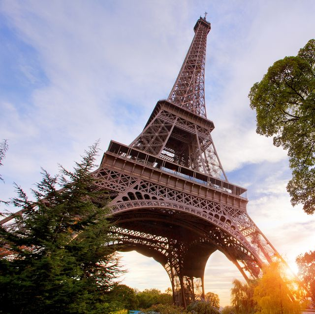

Lozano Gallardo Jossyl Jaely
Mi pagina habla de Paris, la capital de Francia es una importante ciudad europea y un centro mundial del arte, la moda, gastronomía y la cultura, su paisaje urbano del siglo XIX esta entrecruzado por amplios bulevares y el rio Sena, aparte de estos hito, como la Torre Eiffel y la Catedral Gótica de norte dame del siglo XII, la ciudad es famosa por su cultura del café y las tiendas de modade diseñador a lo largo de la calle rue du Faubourg Saint-Honore.
CONOCE PARIS